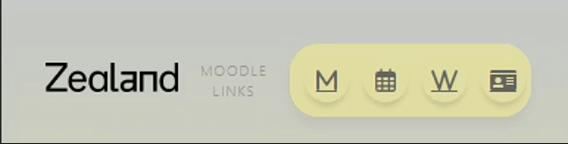

Guide
Her finder du alle de nødvendige oplysninger om Zealands Web App!
Vis Opgaver
Dagens nye feature er udkommet i dag og kan bruges med det samme!
Nederst på siden kan du finde en knap, der hedder Vis Opgaver, hvor du kan tilføje en opgave, reminder eller lignende.
Funktionen er dog endnu ikke helt færdig, da den kun gemmer opgaver i midlertidig lager.
Længere nede får du et overblik af funktionerne!
Værktøjskassen
Her finder du alle Microsoft goodies skolen har at tilbyde!
Skole nyheder
Skolens interne feed via Moodle!
Printsystem
Skolens printsystem!
Hvis der skal printes ud, så sørg for at uploade hjemmefra - det er lidt nemmere.
Husk at overføre penge til systemet, da det koster nogle kroner at printe ud!
Studiekort
Tryk på ikonet i navigationsbaren øverst på siden for at komme til oprettelse af studiekort.
Husk at medbringe et smil!
Profil
Login-systemet er desværre under udvikling! Du må nøjes med en beta!